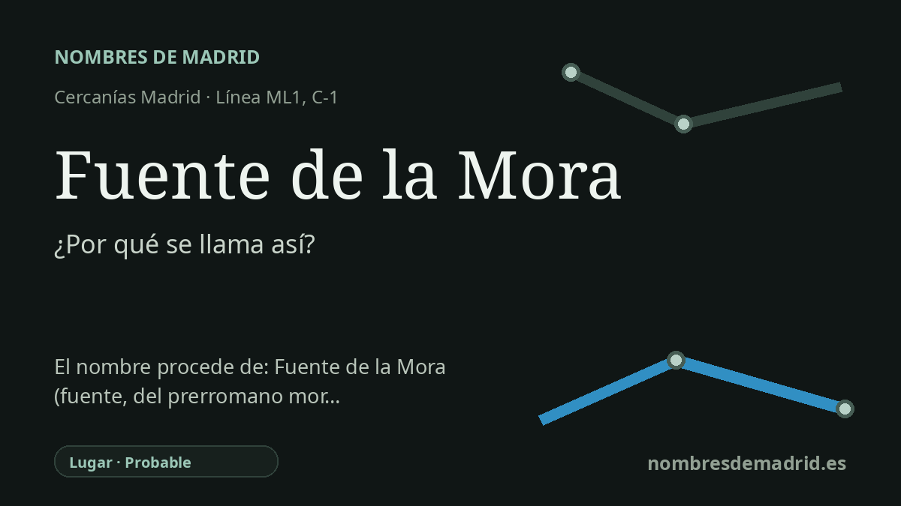

Publicado el · Investigación de Nombres de Madrid · Cómo verificamos cada origen · 8 fuentes consultadas
Respuesta rápida
Fuente de la Mora toma su nombre de una antigua fuente o topónimo local conservado en el cercano Camino y Avenida de la Fuente de la Mora. El sentido exacto de Mora no está documentado con seguridad para este lugar concreto.
La historia del nombre
El nombre de la estación procede del lugar en el que se sitúa, no de una persona. El callejero oficial del Ayuntamiento de Madrid recoge tanto la Avenida de la Fuente de la Mora como el Camino de la Fuente de la Mora en el distrito de Hortaleza, y el Consorcio Regional de Transportes sitúa los accesos de la estación en esas mismas vías. En ese sentido práctico, la parada ferroviaria y de metro ligero heredó un topónimo local ya fijado en el mapa urbano.
Detrás del nombre viario hay un paisaje rural anterior. Un relato histórico local sobre los antiguos caminos de Hortaleza describe el Camino de la Fuente de la Mora como un ramal que salía del Camino del Charco Pescador y señala que el nombre ha sobrevivido como calle en el nuevo barrio de Sanchinarro. El primer elemento, fuente, no plantea problemas: alude a un manantial, fuente o punto de agua, un tipo de referencia muy habitual para nombrar caminos, tierras y límites en la Hortaleza anterior a la urbanización.
La parte difícil es Mora. Puede sugerir una lectura legendaria como 'mujer mora', y en la toponimia española los nombres Mora se han explicado de formas diversas: por moreras o moras, por nombres personales, por moros o por terrenos pedregosos. Jairo J. García Sánchez, al tratar Valdemoro y no esta estación, recuerda que mor- puede interpretarse como elemento prerromano con el sentido de montón de piedras, pero presenta esa clase de explicación como incierta. Para la Fuente de la Mora de Hortaleza, la lectura pública prudente es por tanto 'la fuente llamada de la Mora', con el segundo elemento sin resolver del todo.
La historia del transporte explica por qué este nombre antiguo volvió a ganar presencia. La línea ML1 de Metro Ligero abrió en 2007 en los nuevos desarrollos del norte de Madrid, y la parada de Cercanías se abrió al público en marzo de 2011 junto a la estación de metro ligero. Las crónicas de la inauguración indican que la estación de Cercanías se había previsto inicialmente como Manoteras, por la zona empresarial y residencial próxima, pero abrió como Fuente de la Mora, en continuidad con el intercambiador y con el topónimo viario existente.
El yacimiento arqueológico Fuente de la Mora que suele citarse no prueba el origen del nombre de esta estación. La página de la Comunidad de Madrid identifica ese enclave de la Edad del Hierro como Cerro de Fuente de la Mora, en Leganés, vinculado a las obras de la M-45 y a la Zona Arqueológica de Arroyo Butarque, lejos de Hortaleza. Es un yacimiento real y relevante, pero no forma parte del contexto arqueológico cercano de esta estación.